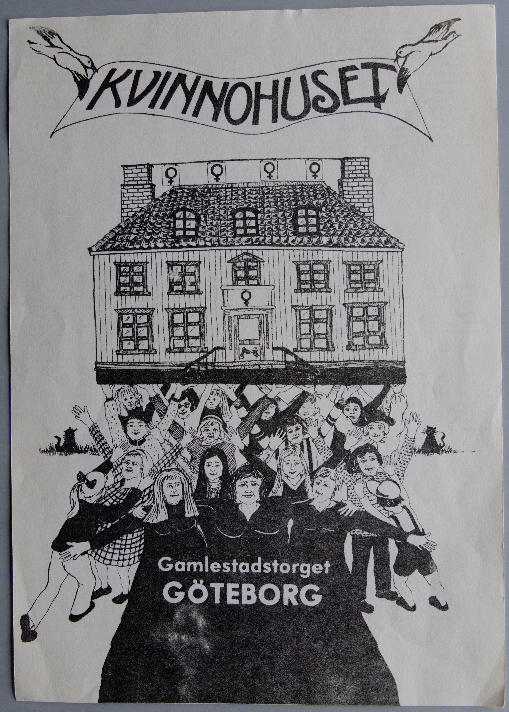
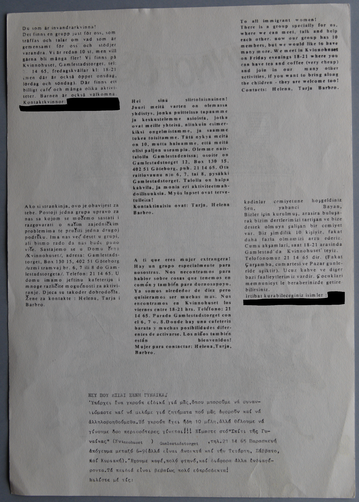

Digitiserad version av affisch för Kvinnohuset där
Kvinnobion var lokaliserad
Faksimil
Transkription
KVINNOHUSET
Gamlestadstorget
GÖTEBORG
Faksimil

Transkription
Du som är invandrarkvinna!
Det finns en grupp just för oss, som
träffas och talar om vad som är
gemensamt för oss och stödjer
varandra. Vi är redan 10 st, men vill
gärna bli många fler! Vi
finns på
Kvinnohuset, Gamlestadstorget, tel:
21 14 65,
fredagskvällar kl: 18-21
(men där är också öppet onsdag,
lördag och söndag). Där finns ett
billigt café och många olika
aktivi-
teter. Barnen är också välkomna.
Kontaktkvinnor:
Ako si strankinja, ovo je obavijest za
tebe. Postoji jedna grupa
upravo za
nas sa kojom se možemo sastati i
razgovarati o našim
zajedničkim
problemima te pružiti jedna drugoj
podršku. Ima
nas već deset u grupi,
ali bismo rado da nas bude puno
više.
Sastajemo se u Domu žena
/Kvinnohuset/, adresa: Gamlestads-
torget, Box 130 15, 402 51 Göteborg
/uzmi tramvaj br. 6, 7 ili 8 do
Gam-
lestadstorgeta/. Telefon: 21 14 65. U
domu imamo jeftinu
kafeteriju i
mnoge različite mogućnosti za aktivi-
ranje.
Djeca su takoder dobrodošla.
Žene za kontakte : Helena, Tarja i
Barbro
Hei sinä siirtolaisnainen!
Juuri meitä varten on olemassa
yhdistys, jonka puitteissa tapaamme
ja keskustelemme asioista, jotka
ovat meille yhteisä, niinkuin esimer-
kiksi ongelmistamme, ja
saamme
tukea toisitamme. Tätä nykyä meitä
on 10, mutta
haluamme, että meitä
olisi paljon useampia. Olemme nais-
talolla Gamlestadenissa; osoite on
Gamlestadstorget 12, Box 130 15,
402 51 Göteborg , puh. 21 14 65. Ota
raitiovaunu n:o 6, 7, tai
8, pysäkki
Gamlestadstorget. Talolla on halpa
kahvila, ja
monia eri aktiviteetmah-
dollisuuksia. Myös lapset ovat terve-
tulleita!
Kontaktinaisia ovat: Tarja, Helena
Barbro.
A ti que eres mujer extrangera!
Hay un grupo especialmente para
nosostras. Nos necontramos para
hablor sobre cosas que tenemos
en
comón y también para dornosapoyo.
Ya somos airededor de
diez pero
quisieramos ser muchas mas. Nos
encontramos en
Kvinnohuset los
viernes entre 18-21 hrs. Teléfono: 21
14 65.
Parada Gamlestadstorget con
el 6, 7 o. 8.Donde hay una cafeteria
barata y muchas posibilidades difer-
entes de activarse. Los
niños también
están bienvenidos!
Mujer para contactar: Helena,
Tarja,
Barbro.
To all immigrant women!
There is a group specially for us,
where we can meet, talk and help
each other. now our group has 10
members, but we would like to have
many more. We meet in
Kvinnohuset
on Friday evenings 18-21 where you
can have tea
and coffee (very cheap)
and join in our many other
activities,
if you want to bring along
the children - they are welcome too!
Contacts: Helena, Tarja Barbro.
kadinlar cemiyetune hoşgeldiniz
Sen, yabanci Bayan,
Bizler
için kurulmuş, arasira buluşa-
rak bizim dertlerimizi tartişan ve
bize
destek olmuya çalişan bir cemiyet
var. Biz şimdilik 10
kişiyiz, fakat
daha fazla olmamizi arzu ederiz.
Cuma
akşamlari, saat 18-21 arasinda
Gamlestad’ da Kvinnohuset’ teyiz.
Telofonomuz 21 14 65 dir. (Fakat
Çarşamba, cumartesi ve Pazar
gunle-
ride açiktir). Ucuz kahve ve diger
bazi faalieytlerimiz
vardir. Çocuklari
memnunieyt le beraberinizde getire-
bilirsiniz.
Irtibat kurabileceginiz isimler: